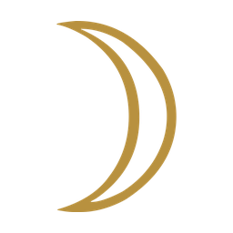

Timing Grimoire
July 23
Born on July 23rd
The birthday of the liberator
Profile
Those born on July 23 are energetic, expressive and creative individuals with a desire to liberate and inspire others. They have strong opinions and are not afraid to express them, often challenging conventional thinking with their progressive ideas and unconventional approach.
Although they can be outspoken and rebellious, they are also deeply caring and compassionate. Their desire to break free from restriction extends to wanting to help others break free as well. Between the ages of thirty and sixty there is an emphasis on practicality, efficiency and analysis, and they need to make sure they channel their rebellious energy constructively during these years. After the age of sixty they may become more relationship-oriented.
Your Greatest Challenge
Knowing when to conform.
The Way Forward
Understand that sometimes working within the system is the most effective way to change it. Choose your battles wisely.
You Are Drawn to People Born Between May 22 and June 21
Those dates fall under  Gemini. You are both intellectually curious and communicative, and this can create a stimulating and exciting relationship.
Gemini. You are both intellectually curious and communicative, and this can create a stimulating and exciting relationship.
Luck Maker: Listen Before You Speak
Lucky people understand that listening is just as important as speaking. By truly hearing what others have to say, you gain valuable insights that can improve your luck.
At Your Best
Inspiring, expressive, compassionate.
On the Dark Side
Rebellious, scattered, opinionated.
Love: Passionate and Free-Spirited
Those born on this day are passionate and free-spirited partners who need plenty of independence in their relationships. They are attracted to intelligent, unconventional individuals who can match their energy and stimulate their mind. They need to be careful that their need for freedom does not prevent them from forming deep emotional bonds.
Health: Channel Your Energy
Those born on this day have abundant energy that needs to be channeled constructively. If they do not find healthy outlets, they may become restless and anxious. Regular vigorous exercise is essential, as are creative pursuits such as writing, painting or music. As far as diet is concerned, they should eat regular meals and avoid stimulants such as caffeine that can increase their restlessness. Wearing, meditating on and surrounding themselves with the color Blue will encourage them to be more calm and focused.
Career: Born Communicators
These individuals are natural communicators and may excel in journalism, writing, broadcasting, teaching, politics or public speaking. Their creative talents may also draw them to the arts, music, acting or design. Their desire to liberate and inspire may lead them to careers in social reform, charity work or counseling.
Destiny: To Liberate and Inspire Others
The life path of those born on this day is to learn to balance their desire for freedom with the need for structure and discipline. Once they have done that, their destiny is to use their considerable communication skills and creative talents to liberate and inspire others.
Power Thought
I listen with an open heart and speak with wisdom.
Signs & Symbols
- Sun sign:
 Leo (cusp with
Leo (cusp with  Cancer)
Cancer) - Ruling planet:
 Sun /
Sun / 
Moon - Symbol: The Lion
- Birth date ruler:
 Mercury, the communicator
Mercury, the communicator - Tarot card: The Hierophant (spiritual guidance)
- Favorable numbers: 3, 5
- Lucky days: Sunday and Wednesday, especially when these days fall on the 3rd or 5th of the month
- Lucky colors: Gold, Blue, Orange
- Birthstone:
 Ruby
Ruby